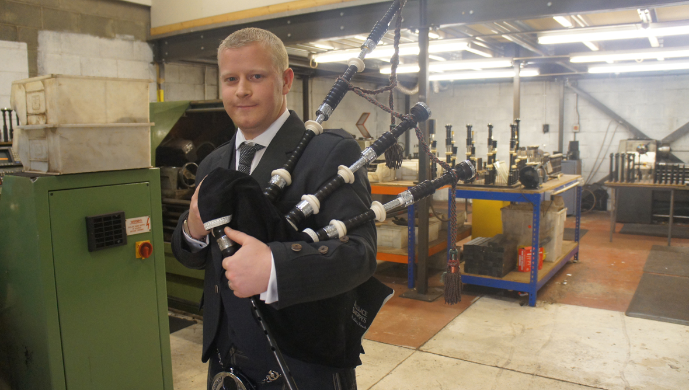

About Us
Our history
BagpipesSymphony is a Scotish entreprise specialized in high quality handmade bagpipes manufacturing and selling since 1957. The entreprise was founded by James Falcon in Paisley, a town near Glasgow. At that time, James Falcon, aged of 44 years, was a renown bagpipe player in Scotland and had the desire to use his knowledge about this instrument to make the best bagpipe in the world. His reputation grew rapidely in the United Kingdom as his bagpipes were becoming more and more appreciated.
In 1974, James Falcon officialy took his retirement and his son, Harry Falcon, took the entreprise. However James Falcon continued to transmit his knowledge to his son. After the death of his father in 1981, Harry Falcon had the desire to grow his entreprise which was composed of 4 bagpipes artisan afterward.
Today, BagpipesSymphony is still composed of 4 persons and Harry Falcon still runs the entreprise and transmits his savoir-fair to his daughter Molly Falcon.
The familly business is widely considered as the best bagpipe manufacturer in Scotland.
Our expertise
We work exclusively with the best wood of scotland. Each and every produced bagpipe is hand made and the results of more than 30 hours of meticulous work. Our bagpipes are tested and is known to produce the most pure and smooth sound in the world of bagpipes.
Our clients
Our name is well known in the world of bagpipes. That is why our clients come from all other the world to purchase our instruments.
Our values
BagpipesSymphony has the ambition to involve the local economy of Paisley for the wood supply as well as the fabric. What's more, we want to preserve our environment by being replacing each and every tree we cut down to make our bagpipes.
